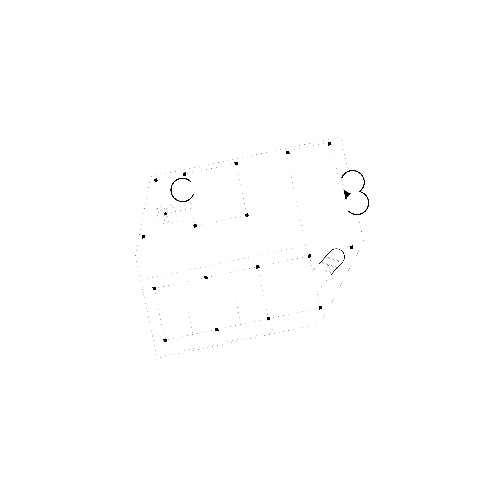
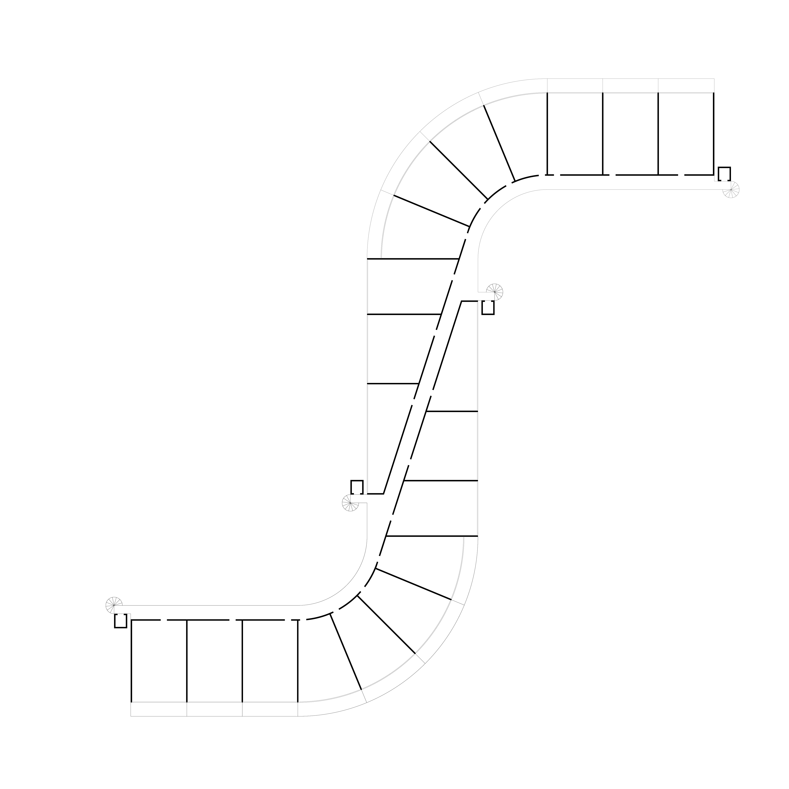
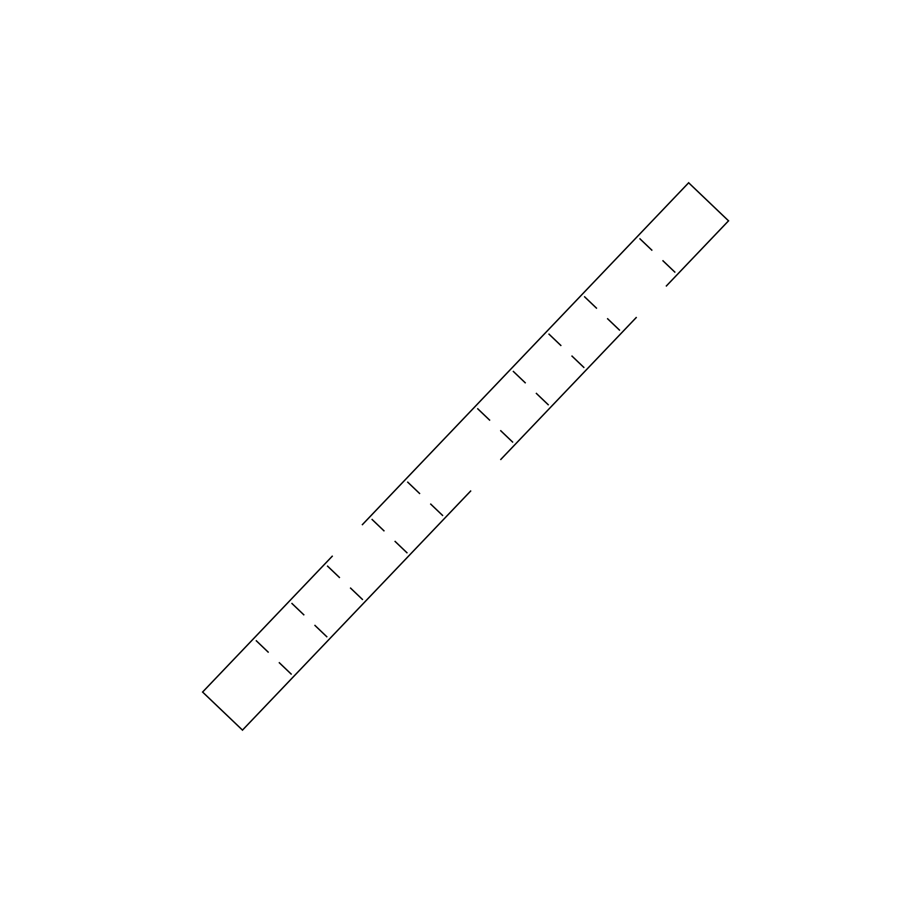
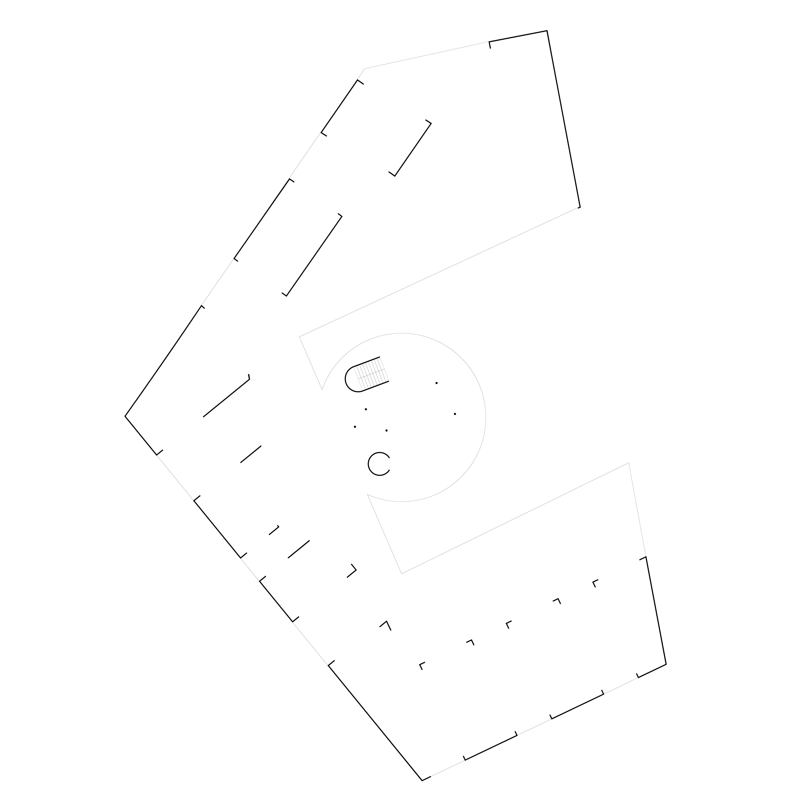
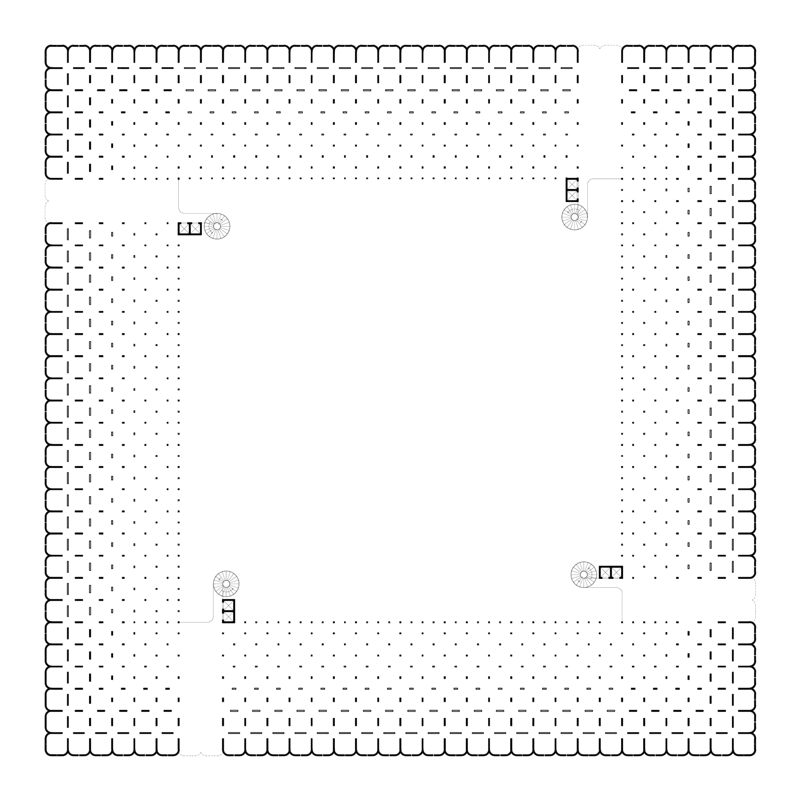

MTGRP
Est. 2018
Architecture concerned with metabolism and circularity — a political approach to temperature, material expression, and collective use. We are interested in the spaces in between.







Architecture concerned with metabolism and circularity — a political approach to temperature, material expression, and collective use. We are interested in the spaces in between.